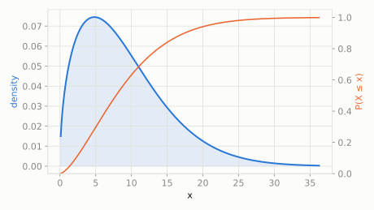

A toy robot's battery tends to die a bit more often the longer it's been running, rather than at a totally constant rate.
What's the chance the battery lasts longer than 15 hours?
scipy.stats.weibull_min
Exponential's more flexible cousin for 'time until failure' -- it lets the failure risk change over time instead of staying constant. Shape c < 1 means it's more likely to fail early (infant mortality); c > 1 means it wears out and gets *more* likely to fail the longer it's run; c = 1 collapses back to plain Exponential.
| parameter | default used here | meaning |
|---|---|---|
c | 1.5 | shape -- controls whether failure risk rises or falls over time |
scale | 10 | characteristic lifetime |
A toy robot's battery tends to die a bit more often the longer it's been running, rather than at a totally constant rate.
What's the chance the battery lasts longer than 15 hours?
scipy.statsimport scipy.stats as stats
import numpy as np
dist = stats.weibull_min(c=1.5, scale=10)
print('P(battery lasts > 15h):', round(dist.sf(15), 4))